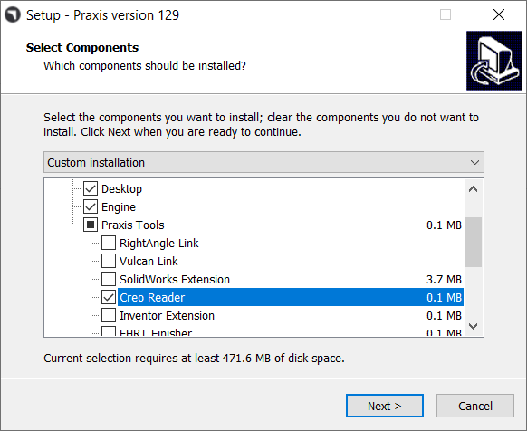
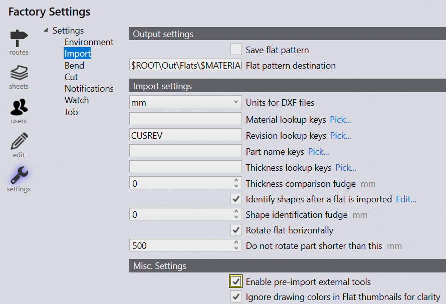
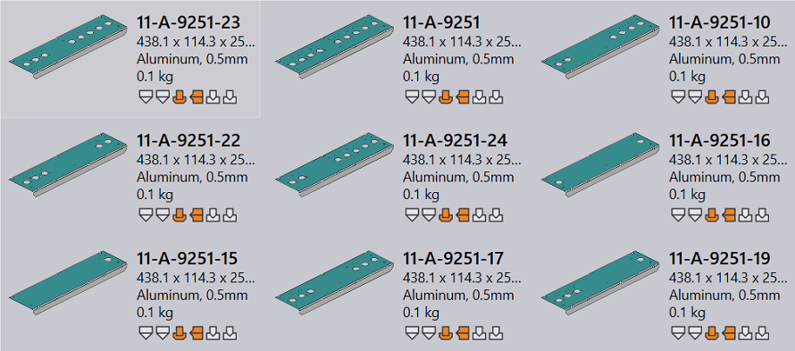

Select Creo Reader option from component selection setup page to install the Creo command line emulator. The Creo tool, Creo.Cmd.exe, is installed in Bin\Apps folder.

Check Enable pre-import external tools import option to enable Creo Reader. Now drop a family table PRT file on Praxis.

Praxis uploads the pre-extracted family instances of the dropped part. Please note that the instance extraction is performed during the part upload (as a pre-import operation), so the Creo software must be installed on computer from where the part is being uploaded.

Set Emulation=1 in User/System environment variables for praxis to use emulation mode of Creo.Cmd.